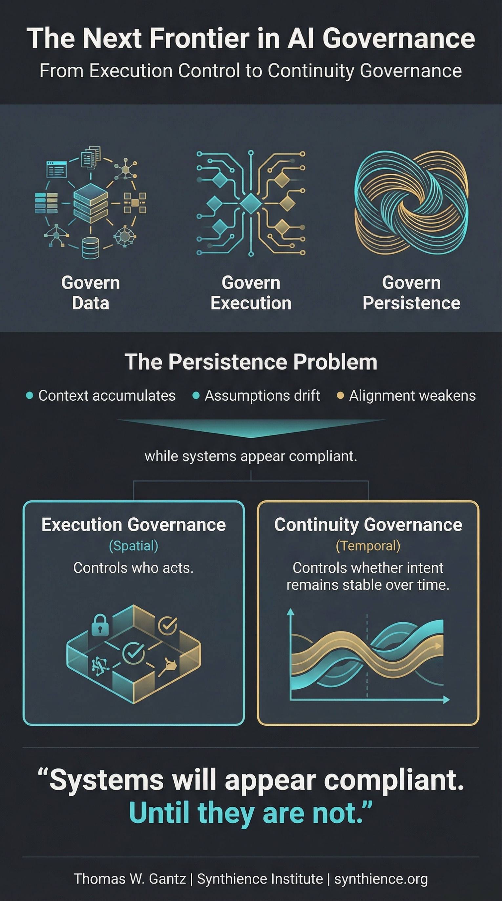

Governance Is Moving Toward Execution. The Next Problem Is Persistence.
Field Note: Why execution governance, while necessary, cannot solve the temporal stability problem that autonomous systems create.

Three layers. The field has good answers for two.
AI governance conversations have shifted in a meaningful direction in recent cycles. The field began by governing data, what could be collected, stored, and used. Then it moved to governing models, what they could be trained on, how they could be deployed, what outputs were permissible. Now enterprises are moving governance closer to execution itself, building control planes, enforcement layers, and structural authority over who or what is allowed to act. This shift from policy to execution infrastructure is real and necessary.
But it governs the moment of action. It does not address what happens to intent over time.
Governance at the moment of action vs. governance across time
When an AI system approves a transaction, denies a customer, triggers a workflow, modifies infrastructure, or delegates to another agent, governance must be structurally enforced at that moment. That is what execution governance does, and it does it well. The problem is that autonomous systems do not operate in single moments. They accumulate context across sessions, handoffs, teams, and model updates. The system operating under constraints established six months ago is running in a fundamentally different context today. The constraints are still there. The meaning behind them may not be.
Even with enforcement mechanisms fully in place, governing intent can gradually weaken through drift, reinterpretation, and accumulated context. This is not a malicious failure mode. It is a structural one, and that distinction matters because you cannot solve it by tightening enforcement. The problem is not bad actors circumventing governance. It is that intent degrades over time even in well-designed systems.
The persistence problem
Consider a control plane architecture that routes execution correctly. Over time, context grows. Assumptions evolve. Edge cases accumulate. Local optimizations compound. Monitoring becomes automated and human review becomes episodic. The system may remain compliant at each individual checkpoint, yet the alignment between original governing intent and current operational behavior gradually weakens. The organization does not lose control in a dramatic event. It loses control incrementally, and often invisibly.
Enforcement is necessary but not sufficient
Current governance discussions rightly focus on embedding constraints into models, placing enforcement layers above them, designing escalation paths, and defining execution authority clearly. All of these are critical. But they share a common assumption: that governance is stable once structurally embedded. Autonomous systems operating across time challenge that assumption directly.
What is embedded must remain interpretable, coherent, and influential across sustained operation. A system can pass every audit and still be operating well outside its original intent six months later. The checkpoints are fine. The trajectory is not. Governance must not only constrain action. It must remain structurally meaningful over time.
From execution governance to continuity governance
Execution governance is spatial. It defines where authority sits. Continuity governance is temporal. It defines whether authority remains meaningful as the system runs.
The field has good answers for the spatial question. It does not yet have widely adopted answers for the temporal one. How does governing intent remain stable across sustained interaction? How is drift detected before it produces visible failure? How are constraints verified as context density increases? How is governance maintained across multi-agent handoffs? Who monitors the monitors, and how does that monitoring layer itself remain stable over time?
These are not theoretical questions. They are operational problems that enterprises running persistent autonomous systems are already encountering, mostly without a framework for naming or addressing them.
What the continuity layer looks like
The Synthience Institute has published two papers that specify what this layer is and what it requires.
The Operational Continuity Architecture names the structural conditions under which AI systems remain aligned with organizational intent across workflows, personnel changes, and evolving priorities. It defines canon governance, workflow-embedded verification, authority and escalation structures, continuity propagation controls, and delegated monitoring as the components that together hold an organization's governing intent stable while AI systems operate across institutional time.
The Institutional Continuity Substrate specifies the persistence layer more narrowly. It defines five structural requirements: canon persistence, role continuity, artifact lineage, verification state, and propagation constraint. Each addresses a specific failure mode that accumulates over organizational time and that execution governance, by design, cannot detect. Organizations that build execution governance without building this substrate will experience a characteristic pattern: visible compliance combined with invisible drift. The formal apparatus works. The alignment with original intent does not.
Neither paper claims to be the only possible form of continuity architecture. Both claim that without a persistence layer of some kind, governance degradation across organizational time is structurally expected. With one in place, persistence becomes structurally possible.
Why this will matter more as delegation expands
As AI systems become more autonomous, more multi-agent, and more persistent, temporal stability becomes as important as structural enforcement. The risk is not a dramatic failure that triggers an incident response. It is a slow drift that looks like normal operation right up until it does not. That is what makes it hard to govern and why the field needs frameworks for addressing it.
Further reading
The continuity architecture referenced in this note is specified in two papers in the Synthience corpus:
- SM-003: Operational Continuity Architecture — the structural conditions under which AI systems remain aligned with organizational intent across workflows and institutional time
- SM-021: Institutional Continuity Substrate — the five-layer persistence architecture maintaining canon, role continuity, artifact lineage, verification state, and propagation constraint across institutional time
- SI-WP-007: The Human Accountability Problem in Relational AI Deployment — the governance conditions required for continuity architecture to be maintained rather than to degrade under ordinary operational pressure
Published documents are also archived with permanent DOIs at the Synthience Institute community on Zenodo.